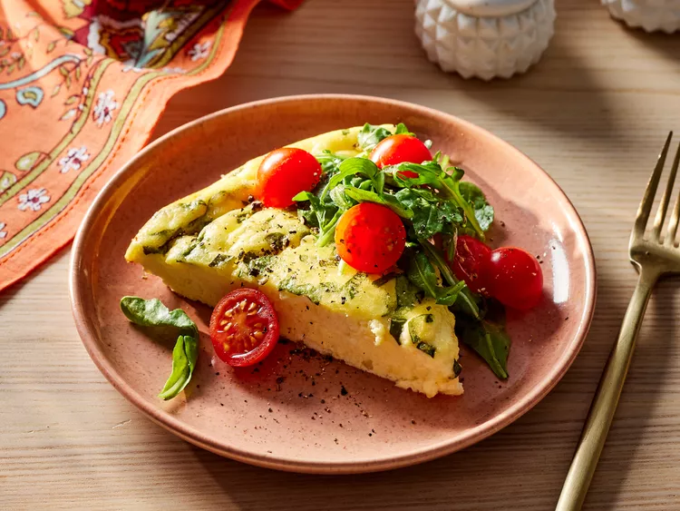

Crustless Ricotta Quiche

Description
Dig into this light and creamy quiche any time of day.
Ingredients
- 6 large eggs
- 1 cup ricotta cheese
- 1/2 cup whole milk
- 1/4 cup freshly grated Parmesan cheese
- 2 tablespoons chopped fresh basil, plus leaves for garnish
- 1 tablespoon chopped fresh oregano
- 1 clove garlic, minced
- 1/2 teaspoon salt
- 1/4 teaspoon freshly ground black pepper
- 1 1/2 cups baby arugula
- 1 cup cherry tomatoes, halved
- 1 tablespoon olive oil
- balsamic vinegar for serving
Steps
- Preheat oven to 350 degrees F (175 degrees C). Grease a 9-inch pie dish.
- Whisk together eggs, ricotta, and milk in a bowl. Stir in Parmesan cheese, basil, oregano, garlic, salt, and pepper; pour into the prepared dish.
- Bake in the preheated oven until puffed and golden on the edges and a toothpick inserted into center comes out clean, about 25 minutes. Let stand for 15 minutes.
- Meanwhile, toss together arugula, tomatoes, and oil in a medium bowl. Just before serving, top quiche with arugula mixture. Cut into 4 slices. Garnish with additional basil and pepper and serve with vinegar.